来源：游家论坛 作者：牛顿他二叔 日期：2008-2-17
队伍组成：亚雷斯，铁诺，小塞，罗兰，圣寇拉斯，亚齐梅吉，渥德组队分值：20分第一关：初始截图略这关就比较容易啦，索尔摘掉武器，跑去挖5000元钱。亚雷斯四处游击杀敌，特别是1000元要杀到。还很容易地救到了4个士兵。过关前的截图如下：
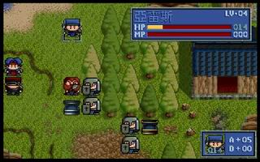
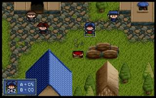
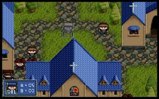
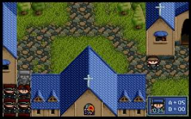
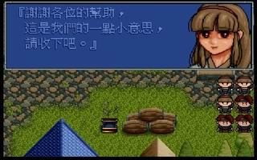
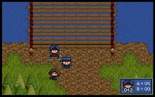
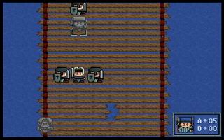
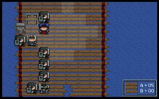
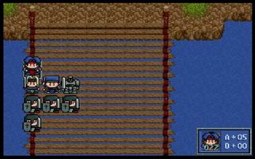
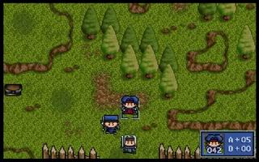
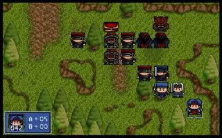
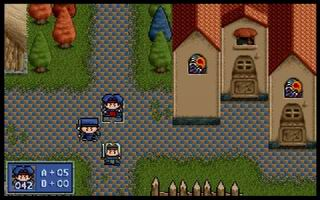
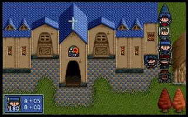
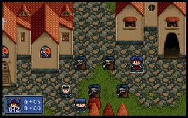
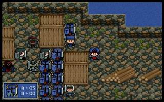
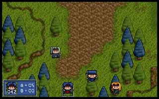
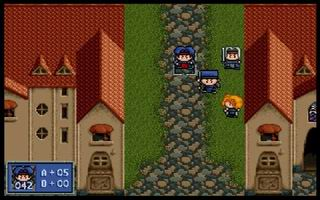
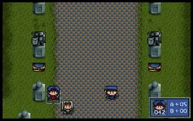
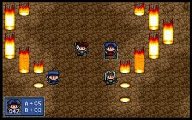
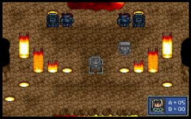
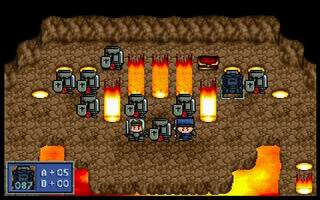
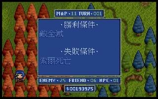
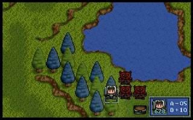
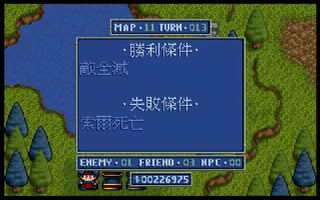
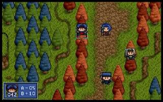
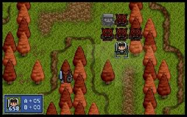
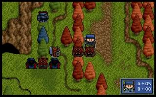
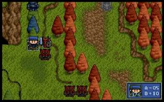
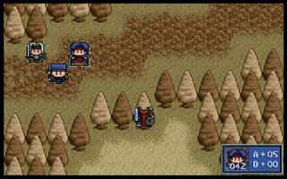
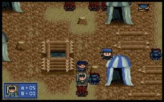
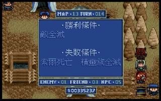
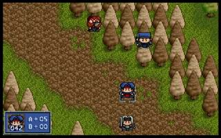
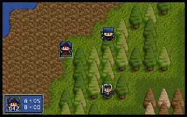
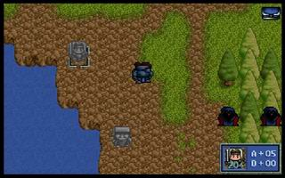
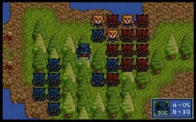
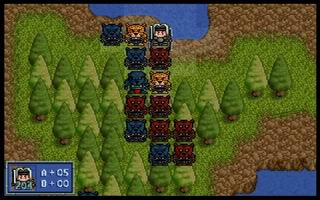
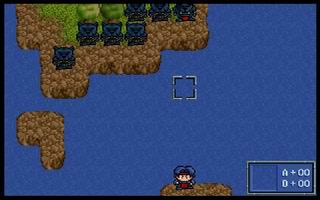
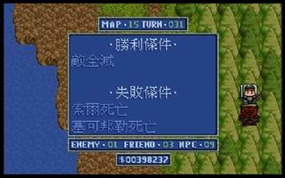
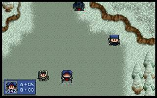
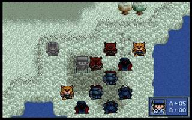
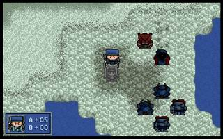
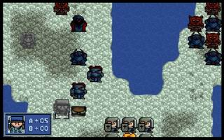
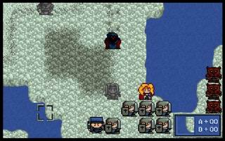
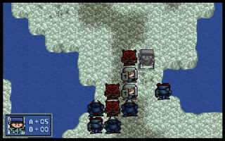
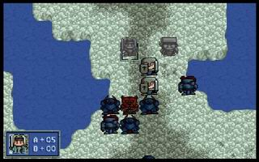
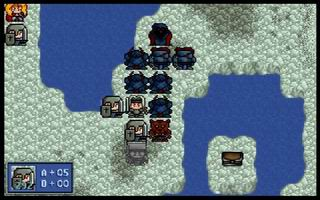
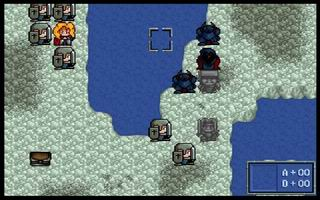
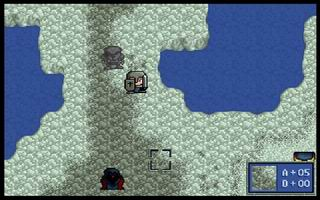
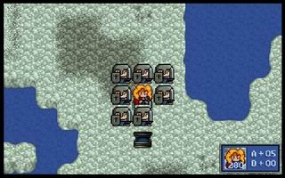
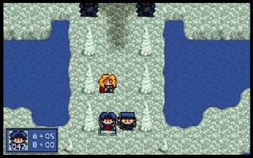
上一篇：“七星拱斗”比赛规则及战果 下一篇：“七星拱斗”挑战赛攻略
TOP↑ 返回>>